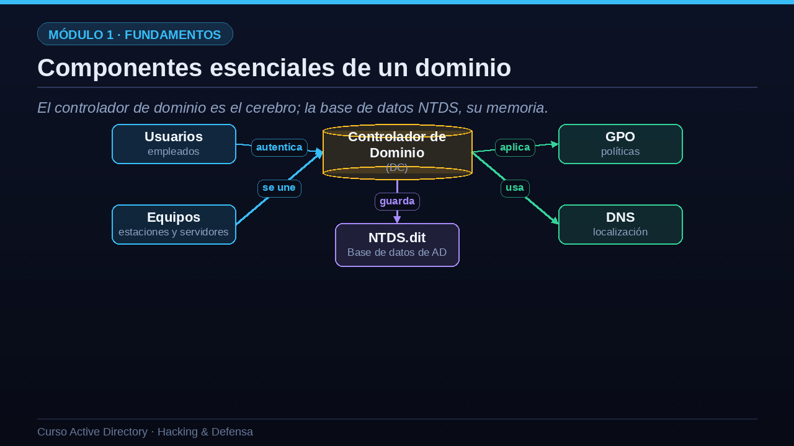
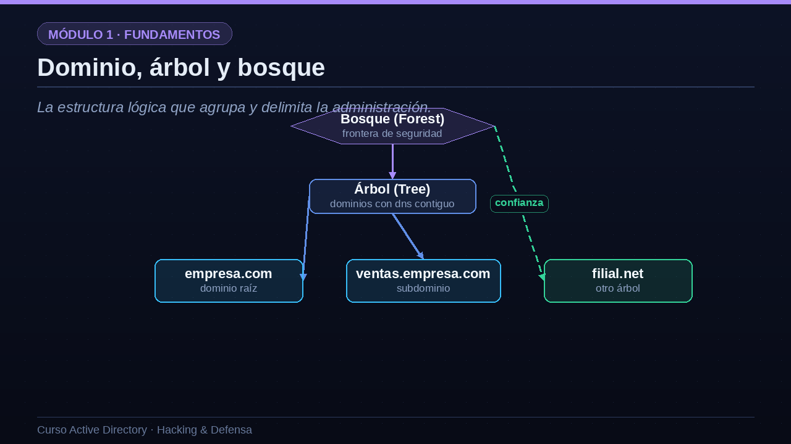
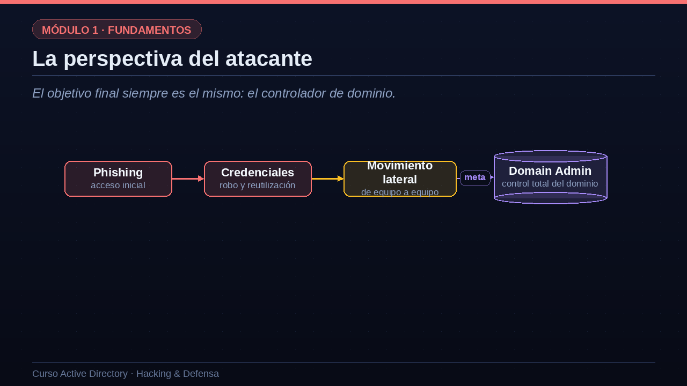

01Lo que aprenderás en esta lección
Una base sólida antes de entrar en administración, ataques y defensa.
Antes de empezar, este es el mapa de la lección. Primero entenderemos qué es un directorio y la idea de identidad centralizada, que transformó por completo la forma de administrar redes. Después veremos los componentes esenciales: los controladores de dominio, los dominios, los bosques, los objetos y el esquema. Mencionaremos los protocolos que lo hacen funcionar, como DNS, LDAP, Kerberos y NTLM, que estudiaremos en profundidad en lecciones posteriores. Y, muy importante, empezaremos a mirar Active Directory con los ojos de un atacante, porque entender para qué sirve es también entender por qué es el gran premio de cualquier intrusión.
- Qué es y para qué sirve un directorioLa idea de identidad centralizada y por qué cambió la gestión de redes.
- Los componentes esencialesControladores de dominio, dominios, bosques, objetos y esquema.
- Los protocolos que lo sostienenDNS, LDAP, Kerberos y NTLM, que veremos en detalle más adelante.
- La perspectiva del atacantePor qué comprometer el dominio equivale a comprometer toda la empresa.
02La idea central: un directorio de identidades
Imagina la guía telefónica de una empresa, pero viva y con permisos.
La idea central de Active Directory es la de un directorio. Piensa en la guía telefónica de una empresa, pero una guía viva, que además guarda permisos. En lugar de que cada ordenador tenga su propia lista de usuarios y contraseñas, existe un lugar único y central donde vive todo: los usuarios, sus contraseñas, los equipos, las impresoras, los grupos y los permisos. Gracias a eso, un empleado tiene una sola identidad: inicia sesión una vez y accede a todos los recursos para los que está autorizado. Y un administrador puede gestionar diez mil ordenadores con casi la misma facilidad con la que gestionaría uno solo. Esa centralización es, en una frase, el motivo por el que Active Directory existe.
- Un lugar único donde vive todoUsuarios, contraseñas, equipos, impresoras, grupos y permisos, centralizados.
- Una sola identidad para todoEl empleado inicia sesión una vez y accede a los recursos autorizados de la red.
- Administración a escalaUn administrador gestiona diez mil equipos con la misma facilidad que uno solo.
03Definición y servicios que ofrece
Active Directory es el servicio de directorio de Microsoft para redes Windows.
Pongámosle una definición formal. Active Directory es el servicio de directorio de Microsoft para redes Windows, introducido con Windows 2000 y presente hoy en prácticamente todas las organizaciones. Ofrece cuatro grandes servicios. El primero es la autenticación: verificar quién eres cuando inicias sesión o accedes a un recurso. El segundo es la autorización: decidir, una vez que sabe quién eres, a qué tienes derecho a acceder. El tercero es el propio directorio: permite localizar y consultar objetos, como usuarios, grupos, equipos o servicios. Y el cuarto es la gestión de políticas, que aplica configuración y medidas de seguridad de forma masiva mediante las directivas de grupo, las famosas GPO. Autenticar, autorizar, localizar y administrar: esas son sus cuatro funciones.
- AutenticaciónVerifica quién eres cuando inicias sesión o accedes a un recurso.
- AutorizaciónDecide a qué tienes derecho a acceder una vez identificado.
- Directorio y búsquedaPermite localizar objetos: usuarios, grupos, equipos, servicios.
- Gestión de políticasAplica configuración y seguridad de forma masiva mediante GPO.
04Por qué importa tanto
¿Por qué le dedicamos un curso entero? Por su alcance. Se estima que alrededor del noventa por ciento de las empresas del mundo usan Active Directory como su directorio de identidades principal. Eso significa que, cuando ocurre una brecha de seguridad dirigida, casi siempre acaba pasando por el directorio: es el objetivo final del atacante. Y hay un factor añadido: Active Directory arrastra unos veinticinco años de compatibilidad histórica. Esa herencia es muy valiosa para que todo siga funcionando, pero también mantiene vivos protocolos y configuraciones antiguas que, como veremos, abren la puerta a muchos ataques.
de las empresas
usan Active Directory como directorio de identidades principal.
casi siempre toca AD
el directorio es el objetivo final de la mayoría de ataques dirigidos.
de legado
compatibilidad histórica que arrastra decisiones de seguridad delicadas.
05Componentes esenciales de un dominio
El controlador de dominio es el cerebro; la base de datos NTDS, su memoria.
Veamos las piezas sobre un diagrama. En el centro está el controlador de dominio, abreviado DC. Es el cerebro del sistema: un servidor Windows que ejecuta los servicios de directorio y atiende todas las peticiones de autenticación. Dentro del controlador vive su memoria: un fichero llamado NTDS punto dit, la base de datos de Active Directory, donde se almacenan todos los objetos y, muy importante, los hashes de las contraseñas. A su alrededor giran los demás elementos: los usuarios, que se autentican contra el DC; los equipos, que se unen al dominio y quedan bajo su control; las GPO, que el controlador distribuye para aplicar políticas; y el servicio DNS, que todos usan para localizar al propio controlador. Memoriza esta imagen, porque todo lo demás encaja sobre ella.

06Objetos: los habitantes del directorio
Casi todo en AD es un objeto con atributos.
Dentro del directorio, casi todo es un objeto, y cada objeto tiene atributos, como su nombre, su descripción o su contraseña. Vamos a conocer a sus habitantes principales. Un usuario representa una identidad que inicia sesión, por ejemplo ana punto lopez. Un equipo representa una máquina unida al dominio; fíjate en que su nombre termina en el símbolo del dólar. Un grupo es un conjunto que sirve para asignar permisos de golpe a muchas identidades; el grupo más peligroso de todos es Domain Admins, los administradores del dominio. Una unidad organizativa, u o u, es un contenedor para organizar objetos y aplicarles políticas. Y una GPO es, como ya vimos, un conjunto de ajustes de configuración. Estos cinco tipos de objeto son el vocabulario básico que usaremos durante todo el curso.
| Objeto | Qué representa | Ejemplo |
|---|---|---|
| Usuario | Una identidad que inicia sesión | ana.lopez |
| Equipo | Una máquina unida al dominio | PC-VENTAS-07$ |
| Grupo | Un conjunto para asignar permisos | Domain Admins |
| OU | Un contenedor para organizar y aplicar GPO | OU=RRHH |
| GPO | Un conjunto de ajustes de configuración | Política de contraseñas |
07Dominio, árbol y bosque
La estructura lógica que agrupa y delimita la administración.
Los dominios no viven aislados: se agrupan en estructuras más grandes. El dominio es la unidad básica de administración y replicación, por ejemplo empresa punto com. Cuando varios dominios comparten un espacio de nombres continuo, como empresa punto com y ventas punto empresa punto com, forman un árbol. Y el contenedor que engloba uno o varios árboles se llama bosque. Quédate con esta idea, porque es crucial para la seguridad: el bosque, no el dominio, es la verdadera frontera de seguridad en Active Directory. Dentro de un mismo bosque los dominios confían entre sí de forma automática, de modo que comprometer un solo dominio puede, en muchos casos, abrir el camino hacia todo el bosque.

08Estructura lógica frente a estructura física
AD separa cómo organizas los objetos de dónde están realmente las máquinas.
Un punto que suele confundir al principio: Active Directory tiene dos estructuras paralelas. La estructura lógica describe cómo organizas los objetos para administrarlos: bosques, árboles, dominios, unidades organizativas y los propios usuarios y grupos. No depende de dónde estén físicamente las máquinas. La estructura física, en cambio, describe el mundo real: los servidores que actúan como controladores de dominio, los sitios que representan ubicaciones de red, y los enlaces por los que se replica la información entre ellos. En resumen: la estructura lógica está pensada para administrar y delegar, y la física para el rendimiento y la disponibilidad. Las dos conviven y es importante no mezclarlas.
| Estructura lógica | Estructura física |
|---|---|
| Bosques, árboles y dominios | Controladores de dominio (servidores) |
| Unidades organizativas (OU) | Sitios (ubicaciones de red) |
| Usuarios, grupos y objetos | Enlaces y replicación entre sitios |
| Pensada para administrar y delegar | Pensada para rendimiento y disponibilidad |
09Los dos protocolos de autenticación
¿Cómo demuestra un usuario que es quien dice ser? Mediante uno de dos protocolos de autenticación. El moderno, y el que se usa por defecto, es Kerberos. Funciona con tickets que emite el controlador de dominio y tiene una gran virtud: nunca envía la contraseña por la red. Aun así, como veremos, tiene ataques propios, como el Kerberoasting. El otro protocolo es NTLM, el método heredado, un sistema de reto-respuesta anterior a Kerberos. Sigue activo en casi todas las redes por compatibilidad, y es el responsable de ataques clásicos como Pass-the-Hash y los ataques de relay. Toda la parte ofensiva del curso girará, en buena medida, alrededor de estos dos protocolos y de sus debilidades.
Kerberos
- El método moderno y por defectoBasado en tickets emitidos por el controlador de dominio.
- No envía la contraseña por la redMás seguro, pero con ataques propios como Kerberoasting.
NTLM
- El método heredadoSistema de reto-respuesta anterior a Kerberos.
- Sigue activo por compatibilidadVulnerable a Pass-the-Hash y relay. Un objetivo clásico.
10DNS y LDAP: localizar y consultar
Dos protocolos más completan el cuadro. El primero es DNS, que funciona como el GPS del dominio. Es tan importante que, sin DNS, los clientes simplemente no encuentran al controlador de dominio y nada funciona. Active Directory publica unos registros especiales, llamados registros SRV, que anuncian dónde están sus servicios. El segundo protocolo es LDAP, que podemos ver como el idioma del directorio: es el mecanismo con el que se consultan y se modifican los objetos. LDAP escucha en el puerto trescientos ochenta y nueve en claro, y en el seiscientos treinta y seis cuando va cifrado sobre TLS. Recuerda LDAP, porque la fase de enumeración de casi cualquier ataque, en la que el intruso cartografía el dominio, empieza precisamente haciendo consultas LDAP.
- DNS: el GPS del dominioSin DNS, los clientes no encuentran al controlador. AD depende por completo de él.
- Registros SRVEntradas especiales de DNS que anuncian dónde están los servicios de AD.
- LDAP: el idioma del directorioEl protocolo con el que se consultan y modifican los objetos del directorio.
- Puerto 389 y 636LDAP en claro y LDAP sobre TLS. La enumeración empieza casi siempre aquí.
11La perspectiva del atacante
El objetivo final siempre es el mismo: el controlador de dominio.
Pongámonos ahora en el lado ofensivo, que es el hilo conductor del curso. Un ataque a Active Directory sigue casi siempre el mismo recorrido. Todo empieza con un acceso inicial, normalmente mediante phishing, que le da al atacante el control de un equipo cualquiera. Desde ahí, el intruso roba credenciales y las reutiliza. Con esas credenciales salta de un equipo a otro, lo que llamamos movimiento lateral, recolectando por el camino identidades cada vez más privilegiadas. Y el destino es siempre el mismo: convertirse en administrador del dominio y tomar el control total. La defensa, por tanto, no consiste en levantar un único muro, sino en romper esta cadena en cada uno de sus eslabones. Ese será nuestro marco mental durante todo el curso.

12Tu laboratorio para practicar
Nunca practiques ataques fuera de un entorno controlado y autorizado.
Para que este curso te sirva de verdad, necesitas un laboratorio donde practicar sin romper nada ni meterte en problemas legales. El montaje mínimo es sencillo. Necesitas un controlador de dominio, que es un Windows Server con el rol de servicios de dominio instalado. Una o dos máquinas cliente, con Windows diez u once, unidas a ese dominio, que harán de víctimas. Y una máquina atacante, típicamente Kali o Parrot, con herramientas como Impacket, BloodHound, CrackMapExec y Mimikatz, que iremos usando. Y una regla de oro, innegociable: todo debe estar aislado en una red privada, sin conexión con sistemas reales de producción. Las técnicas que aprenderás solo deben usarse en entornos propios o con autorización explícita por escrito. La ética y la ley van primero, siempre.
- Un controlador de dominioWindows Server con el rol de AD DS. Será tu DC de pruebas.
- Una o dos máquinas clienteWindows 10 u 11 unidas al dominio, como víctimas.
- Una máquina atacanteKali o Parrot con Impacket, BloodHound, CrackMapExec y Mimikatz.
- Todo aisladoRed privada, sin salida a producción. La ética y la ley primero.
13Resumen de la lección
Hagamos un resumen de lo aprendido. Active Directory es un directorio de identidades que centraliza la autenticación, la autorización y la administración en las redes Windows. Su pieza central es el controlador de dominio, que guarda la base de datos NTDS con todos los objetos y los hashes de las contraseñas. Los objetos se organizan en dominios, árboles y bosques, y recuerda que el bosque es la verdadera frontera de seguridad. Y todo se sostiene sobre cuatro protocolos: Kerberos y NTLM para autenticar, DNS para localizar y LDAP para consultar. En torno a ellos giran la mayoría de los ataques.
- AD es un directorio de identidadesCentraliza autenticación, autorización y administración en redes Windows.
- El DC es el cerebroGuarda la base de datos NTDS con todos los objetos y los hashes.
- Dominio, árbol y bosqueEl bosque es la verdadera frontera de seguridad.
- Kerberos, NTLM, DNS y LDAPLos protocolos que estudiaremos a fondo y que concentran los ataques.
“Quien controla Active Directory controla la organización entera: cada equipo, cada dato y cada usuario.”Principio fundamental de la seguridad en dominios Windows
Quiero que te lleves una frase de esta lección: quien controla Active Directory controla la organización entera, cada equipo, cada dato y cada usuario. Por eso dominar cómo funciona por dentro no es un lujo técnico, sino la base imprescindible tanto para administrarlo bien como para defenderlo. En la próxima lección bajaremos un nivel y desmenuzaremos los dominios, los árboles, los bosques y las unidades organizativas, para que entiendas con precisión cómo se diseña la estructura de una empresa real. Nos vemos en la lección dos.